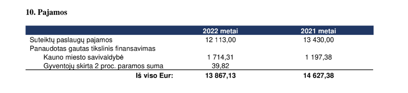

... buvo labai šaunūs ir gausūs įdomių tyrimų. Šiais metais mažiau laiko skyrėme mokymams, seminarams ir dirbtuvėms, tačiau atlikome keletą didelių tyrimų, kurių temos gana skirtingos, bet vienodai vertos dėmesio. Vykdėme tyrimus tokiomis įvsiriomis temomis kaip Lotynų Amerikos telenovelių žiūrėjimo fenomenas Lietuvoje ar sveikatos paslaugų prieinamumas romų tautybės žmonėms Vilniaus mieste. O taip pat mūsų komanda pagausėjo nuostabiu kolega Giedriumi Jankausku!
Ką nuveikėme?
- • Tęsėme ir baigėme 2021 metais pradėtą projektą „Let’s Not Waste Food”. Projektas vykdomas kartu su Kauno Technologijos universiteto Maisto institutu, Suomijos gamtinių išteklių institutu (LUKE), Kopenhagos verslo mokykla (CBS). Šiais metais atlikome fokus grupių interviu Lietuvoje bei bendrą trijų šalių duomenų analizę apie maisto pirkimo, vartojimo ir išmetimo praktikas jaunimo tarpe. Parengėme gaires įvairioms suinteresuotoms šalims iš jaunimo perspektyvos kaip mažinti maisto išmetimą bei užsiėmėme projekto komunikacija. Projektą finansavo Norden (Šiaurės ministrų taryba Lietuvoje).
Čia galite susipažinti su projekto metu sukurtomis gairėmis: Let's not Waste Food projeko gairės
Video apie projektą (trumpas): Let's not Waste Food video 1
Video apie projektą (ilgas): Let's not Waste Food video 2
- • Sausio mėnesį anthropietės Ugnė ir Kornelija dalyvavo Erasmus+ mokymuose kaip vykdyti edukacijas žmogaus teisių temomis. Išmokome daugybę naujų metodų ir pagilinome kompetencijas neformaliajame švietime! Labai ačiū Fundacja Młodzi dla Europy už nuostabius mokymus, puikų organizacinį darbą ir nuostabią kompaniją!
Mokymų akiminrkos
- • Kovo-balandžio mėnesiais rengėme tyrimą su MO muziejaus,/b> vykdomo projekto ,b>„Vizualinio mąstymo mainai mene: mokytojų projektas" dalyviais - parengėme apklausos anketas ir rezultatų analizę. Tyrimą finansavo MO muziejus.
- • Vasario mėnesį surengėme pirmąjį ERASMUS+ projekto „Towards ethical cultural representations in advocacy work” partnerių susitikimą. Susipažinome ir aptarėme projekto eigą 2023 metais. Projektą finansuoja ERASMUS+ Jaunimo darbuotojų mobilumo programa.
- • Birželio mėn. vedėme „Antropologijos dirbtuvės: maistas ir klimato kaita” Kauno Jurgio Dapkevičiaus progimnazės šeštokams, Finansavo Lietuvos kultūros ministerijos Kultūros paso programa.
- • Jau ketvirtą vasarą įvyko trijų dienų antropologijos dirbtuvės jaunimui. 2022 metų tema: "Antropologijos dirbtuvės 2022: Miestas ir tautiškumas globalizacijos įtakoje - Kauno tapatybių (pa)tyrimai”. Projektą finansavo Kauno m. savivaldybės programa “Iniciatyvos Kaunui”.
Keletas akimirkų iš dirbtuvių: akimirkos 1
akimirkos 2
akimirkos 3
Dirbtuvių programa
- • Rugpjūčio - gruodžio mėnesiais atlikome tyrimą apie Lotynų Amerikos telenovelių (vadinamųjų muilo operų) žiūrėjimo fenomeną Lietuvoje pirmaisiais Nepriklausomybės dešimtmečiais. Tyrimas skirtas dokumentinio filmo scenarijaus vystymui. Tyrimo metu rengėme fokus grupes, atlikome interviu su žmonėmis iš įvairių Lietuvos vietovių, kurie prisimena šį laikotarpį. Tyrimu siekėme išsiaiškinti, kaip per telenovelių žiūrėjimo praktikas atsiskleidžia apie Nepriklausomybės pirmojo dešimtmečio kasdienybė, sunkumai ir džiaugsmai. Tyrimą užsakė kino studija "Just a Moment". Filmo režisierės - Ieva Balsiūnaitė ir Viktorija Mickutė, prodiuserė - Dagnė Vildžiūnaitė.
Tyrimo rezultatais pasidalinsime kai bus išleistas dokumentinis filmas.
- • Rugsėjo ir spalio mėnesiais rengėme ir siuntėme kreipimosi laišką į Lietuvos Nacionalinį dailės muziejų ir Radvilų rūmus dėl būsimų parodų apie Azijos, Australijos aborigenų, Naujosios Gvinėjos ir Indonezijos meną. Mūsų nuomone, parodas pristatantys tekstai stokojo refleksyvumo paveldo dekolonizavimo kontekste, prisidėjo prie eurocentristinių stereotipų reprodukavimo. Į tai ir atkreipėme parodas rengiančių institucijų dėmesį ir pateikėme rekomendacijas siekiant kurti etišką santykį su parodose reprezentuojamomis grupėmis. Laišką pasirašė įvairios organizacijos ir individualūs asmenys. Laiškas buvo sutiktas teigiamai ir muziejus patikino atsižvelgsiantis į iškeltas problemas.
Su laiško tekstu galite susipažinti čia: Kreipimosi laiškas
- • 2022 m. spalio ir 2023 m. vasario mėnesiais drauge su partneriais romų vaikų dienos centru "Padėk Pritapti" atlikome kokybinį tyrimą apie valstybinių sveikatos paslaugų pasiekiamumą romų tautybės žmonėms Vilniaus miesto savivaldybėje. Tyrimą užsakė Vilniaus miesto savivaldybės administracija.
- • Rašėme ir teikėme projektus:
- „Kultūriškai jautrios ir saugios mokyklos link: tarpkultūrinių kompetencijų kėlimas mokyklų bendruomenėse” Aktyvių piliečių fondui, Didesnės paramos žmogaus teisėms poveikio sričiai (finansavimas negautas);
- Padėjome rašyti projektą organizacijai KIDE (Klaipėdiečių iniciatyva už demokratiją ir ekologiją). Projektas buvo planuojamas teikti Aktyvių piliečių fondui. Projekto pavadinimas: Mokslinis tyrimas „Kaimynystėje su pramonės įmonėmis gyvenančių žmonių patirtys ir gyvenimo kokybės vertinimas: Vitės ir Smeltės mikrorajonų atvejai Klaipėdoje“;
- -Partneriavome su Vilniaus muziejumi teikiant projektą Kultūros tarybai „Krasnūcha: pažinimo labaratorija” (finansavimas gautas).
- • Veiklos ir rūpimų klausimų temomis kalbėjome:
-Balandžio mėnesį skaitėme pranešimą nuotoliu Vytauto Didžiojo universiteto Socialinių mokslų fakultete tema „Stakeholders in Practice: Researching Them vs. Working With Them“. Renginį organizavo VDU Socialinės antropologijos centras;
-Gruodžio mėnesį dalyvavome Švietimo, mokslo ir sporto ministerijos organizuotoje konferencijoje ir diskusijose „Profesinis orientavimas: iššūkiai ir perspektyvos”. Anthropietė Kornelija pasakojo kaip renkantis karjeros kelius mokiniai jaučia spaudimą pasirinkti visuomenės normas atitinkančias tradicines sritis. Dėl patiriamo spaudimo dažnai jos lieka nereflektuojamos. Todėl svarbu kurti įtraukesnes karjeros ugdymo praktikas ir kitaip ugdyti mokinių savirefleksijos įgūdžius. Diskusijos metu kartu su kitais ekspertais Kornelija aptarė esminius iššūkius profesiniame orientavime - nuo socialinės atskirties ir nelygybės iki klimato krizės sukelto ateities neapibrėžtumo;
- • Dalyvavome kaip socialiniai partneriai:
Anthropos dalyvavo VDU Socialinės antropologijos programos magistrinių darbų gynime ir VDU Socialinės antropologijos programos išoriniame vertinime.
- • Aukojome:
Kaip ir visus, mus pribloškė 2022 metais prasidėjusi atvira Rusijos agresija prieš Ukrianą. Stengėmės aukoti nuo organizacijos tiek palaikyti Ukrainą, tiek ir nepamiršti kitų organizacijų Lietuvoje ir kitų katastrofų užsienyje.
- • Ačiū!
Labai dėkojame prie mūsų šiemet prisidėjusiems praktikantams Giedriui Jankauskui ir Rūtai Vyšniauskaitei, kurie buvo ir nepamainoma pagalba, puikūs iniciatyvūs kolegos bei nuostabi kompanija!
Taip pat didelis AČIŪ kolegoms, prisidėjusiems prie tyrimų ir dirbtuvių: Karoliui Dambrauskui ir Žygimantui Bučiui.
